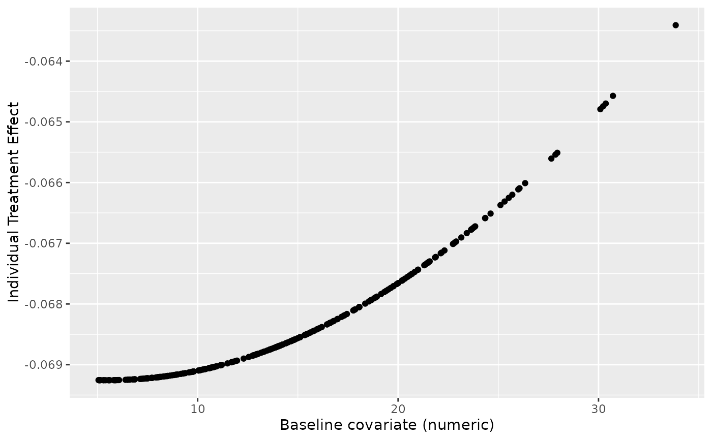

Augments the original dataset with predictions and counterfactual outcomes from a beeca analysis. This function provides a broom-compatible interface for accessing individual-level predictions and potential outcomes under different treatment assignments.
Usage
# S3 method for class 'beeca'
augment(
x,
data = NULL,
newdata = NULL,
type.predict = "response",
type.residuals = "deviance",
...
)Arguments
- x
a beeca object (glm object modified by get_marginal_effect)
- data
optional dataset to augment. If NULL (default), uses the data from the original model fit.
- newdata
deprecated. Use
datainstead.- type.predict
type of prediction to include as
.fitted. Options are "response" (default, predicted probabilities) or "link" (linear predictor scale).- type.residuals
type of residuals to include. Options are "deviance" (default), "pearson", "response", or "working". Set to NULL to exclude residuals.
- ...
additional arguments (not currently used)
Value
a tibble containing the original data augmented with:
| .rownames | Row names from the original data (if present) |
| .fitted | Fitted values from the working model |
| .resid | Residuals (if type.residuals is not NULL) |
| .counterfactual_[level] | Predicted outcome if assigned to each treatment level |
Details
The augment.beeca() method returns the original dataset used in the
analysis, augmented with additional columns containing:
Fitted values from the working model (
.fitted)Counterfactual predictions for each treatment level
Optionally, residuals and other diagnostic information
This is particularly useful for:
Examining individual predictions and potential outcomes
Creating plots of treatment effects across covariates
Conducting sensitivity analyses
Understanding how g-computation works at the individual level
Each counterfactual column represents the predicted outcome if that subject were assigned to a specific treatment level, holding all other covariates constant.
See also
get_marginal_effect() for the main analysis function
beeca_fit() for streamlined analysis pipeline
predict_counterfactuals() for the underlying prediction method
tidy.beeca() for tidied parameter estimates
print.beeca() for concise output
summary.beeca() for detailed summary output
plot.beeca() and plot_forest() for visualizations
as_gt() for publication-ready tables
Examples
trial01$trtp <- factor(trial01$trtp)
fit1 <- glm(aval ~ trtp + bl_cov, family = "binomial", data = trial01) |>
get_marginal_effect(trt = "trtp", method = "Ye", contrast = "diff", reference = "0")
#> Warning: There is 1 record omitted from the original data due to missing values, please check if they should be imputed prior to model fitting.
# Augment with counterfactual predictions
augmented <- augment(fit1)
head(augmented)
#> # A tibble: 6 × 8
#> aval trtp bl_cov .rownames .fitted .resid .counterfactual_0
#> <dbl> <fct> <dbl> <chr> <dbl> <dbl> <dbl>
#> 1 0 1 5.85 2 0.463 -1.12 0.533
#> 2 0 0 5.05 3 0.537 -1.24 0.537
#> 3 0 0 15.6 4 0.481 -1.15 0.481
#> 4 0 1 10.1 5 0.441 -1.08 0.510
#> 5 0 1 25.7 6 0.362 -0.948 0.428
#> 6 1 0 17.0 7 0.474 1.22 0.474
#> # ℹ 1 more variable: .counterfactual_1 <dbl>
# Access counterfactual predictions for treatment level 1
augmented$.counterfactual_1
#> [1] 0.4634279 0.4676301 0.4127455 0.4411090 0.3621208 0.4058096 0.4208994
#> [8] 0.4267151 0.4449290 0.4215244 0.3907289 0.4512412 0.3894764 0.3687170
#> [15] 0.4622316 0.4041297 0.4183539 0.4188515 0.3402957 0.4657572 0.3916215
#> [22] 0.4220542 0.4674856 0.4581573 0.4435192 0.4133057 0.4270845 0.4108900
#> [29] 0.3829508 0.4523136 0.4650323 0.4585527 0.4152049 0.4225623 0.3928249
#> [36] 0.4429842 0.3957282 0.4263597 0.4141053 0.4116243 0.4519878 0.4189395
#> [43] 0.4074387 0.4383453 0.3512238 0.4630054 0.4546930 0.4580911 0.3766422
#> [50] 0.4228557 0.4264304 0.3826072 0.4674416 0.3732901 0.4206740 0.4388415
#> [57] 0.3603614 0.4661996 0.4272426 0.4489273 0.3797316 0.4377377 0.4236785
#> [64] 0.4663822 0.4197254 0.4625371 0.3687789 0.4473409 0.4202968 0.4083744
#> [71] 0.4152470 0.4469233 0.4499352 0.4483094 0.3836290 0.3639997 0.4262686
#> [78] 0.4379126 0.3650080 0.3891769 0.4356611 0.4213898 0.4593923 0.4375804
#> [85] 0.4430570 0.3963668 0.4504229 0.4534702 0.4230941 0.4605559 0.4410356
#> [92] 0.4068696 0.4135581 0.4671201 0.3971339 0.4374045 0.4356424 0.3824886
#> [99] 0.3746329 0.4454242 0.4516408 0.4046705 0.3854636 0.4495476 0.4297727
#> [106] 0.3714885 0.4039131 0.3795198 0.4339617 0.4173167 0.4506223 0.4103758
#> [113] 0.4427342 0.4567257 0.4167769 0.4284480 0.3922526 0.4401479 0.4203372
#> [120] 0.4033151 0.3760781 0.4243712 0.4636694 0.4354350 0.4471726 0.4163719
#> [127] 0.4097057 0.4167619 0.4314871 0.3712133 0.4370184 0.4273578 0.3903450
#> [134] 0.4552259 0.3606622 0.4516058 0.4564055 0.4176759 0.4002280 0.4386181
#> [141] 0.4396465 0.4385918 0.4460622 0.4318266 0.4525934 0.4207744 0.3986752
#> [148] 0.4066523 0.4496539 0.3718219 0.4404118 0.4108943 0.4427433 0.3526566
#> [155] 0.4211882 0.4454954 0.4259513 0.3879992 0.4672212 0.3829437 0.3788080
#> [162] 0.4002329 0.3971305 0.3946492 0.4599363 0.3233190 0.4158290 0.3972873
#> [169] 0.3811499 0.4015844 0.4547610 0.3674307 0.4399465 0.4409163 0.4385927
#> [176] 0.4549060 0.3629759 0.4119639 0.4012083 0.4216180 0.4478004 0.4495813
#> [183] 0.4136199 0.3886485 0.3759049 0.3977520 0.3409476 0.4674119 0.3915213
#> [190] 0.4076758 0.3853761 0.3721603 0.4126525 0.4551333 0.4396157 0.4537616
#> [197] 0.4083160 0.4384677 0.3933559 0.4175944 0.4367736 0.4358176 0.4323384
#> [204] 0.4519830 0.4381953 0.3892694 0.3969917 0.3869203 0.4171850 0.3869024
#> [211] 0.3722248 0.3379725 0.4560669 0.4077280 0.3938624 0.4581696 0.4586348
#> [218] 0.4001457 0.4056401 0.4439697 0.4414874 0.3874737 0.4328493 0.3809702
#> [225] 0.4012755 0.4197442 0.3763476 0.4275136 0.4230628 0.4515527 0.4136111
#> [232] 0.4385581 0.4600362 0.4537875 0.4414151 0.3589953 0.4633271 0.3862286
#> [239] 0.4076310 0.4138884 0.4168317 0.3767011 0.3960248 0.4648963 0.4631316
#> [246] 0.4252635 0.4247280 0.4595339 0.4557202 0.3396759 0.3516773 0.3721324
#> [253] 0.4016934 0.4551803 0.4396470 0.4153078 0.3832560 0.4262962 0.4386496
#> [260] 0.4329465 0.4536864 0.3831329 0.4646627 0.3838310 0.4001507 0.4117796
#> [267] 0.4374523
if (requireNamespace("ggplot2", quietly = TRUE)) {
# Examine predictions by baseline covariate
library(ggplot2)
ggplot(augmented, aes(x = bl_cov, y = .counterfactual_1 - .counterfactual_0)) +
geom_point() +
labs(y = "Individual Treatment Effect")
}
